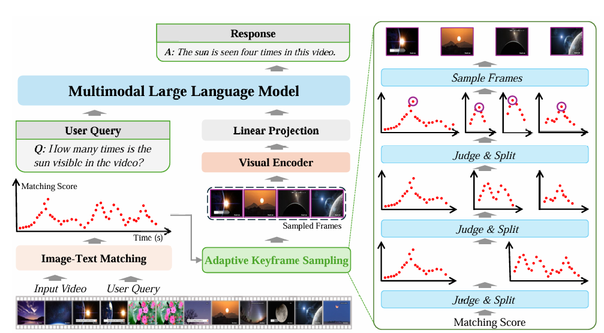

Jihao QiuM.E. candidateRoom 330, Academy 2 Building
|

|
Biography
I am a M.E. candidate of LAMP in the School of Electronic, Electrical and Communication Engineering, University of Chinese Academy of Sciences , advised by Prof. Qixiang Ye. I got a B.E. degree in University of Chinese Academy of Sciences, Beijing in 2023.
My research interests include computer vision and deep learning, specifically for multimodal learning.
Publications
 |
Jihao Qiu, Yuan Zhang, Xi Tang, Lingxi Xie, Tianren Ma, Pengyu Yan, David Doermann, Qixiang Ye, Yunjie Tian
Artemis: Towards Referential Understanding in Complex Videos NeurIPS, 2024 [Paper] [Code] |
 |
Xi Tang*, Jihao Qiu*, Lingxi Xie, Yunjie Tian, Jianbin Jiao and Qixiang Ye
Adaptive Keyframe Sampling for Long Video Understanding CVPR, 2025 [Paper] [Code] |
 |
Yunjie Tian, Lingxi Xie, Jihao Qiu, Jianbin Jiao, Qi Tian, Qixiang Ye
Fast-iTPN: Integrally Pre-Trained Transformer Pyramid Network with Token Migration TPAMI, 2024 [Paper] [Code] |